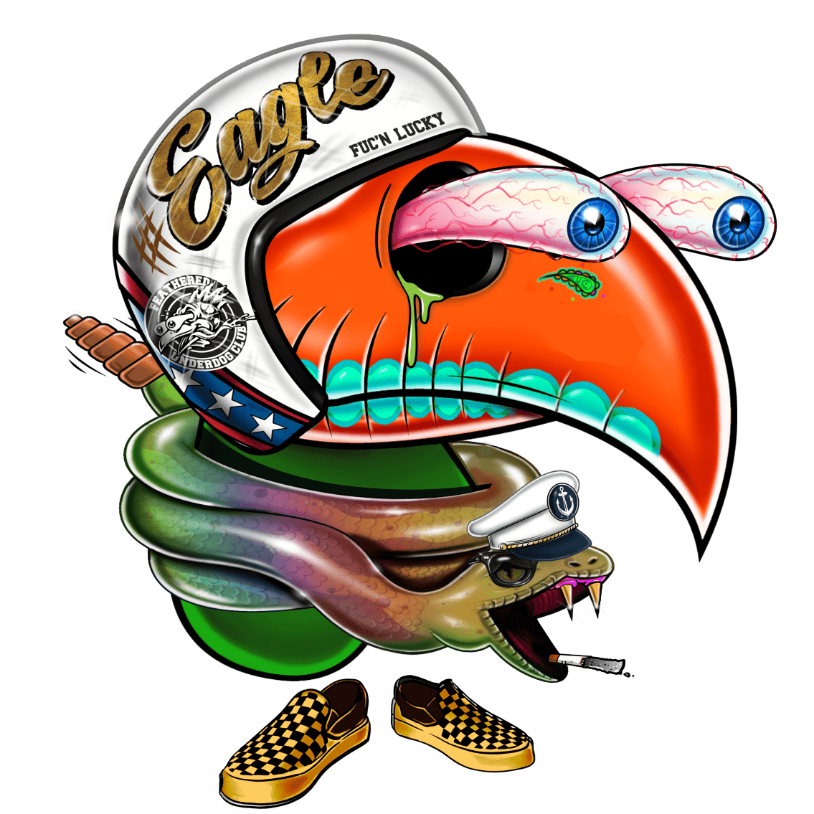 Nut Bodies The Nut Body Project 是由 Sticker Farmer Team 和 The Feathered Underdog Club 创建的免费薄荷 NFT。这款 NFT 兼具扑克牌的功能，以及具有不同属性的小坚果体角色。 “大鹰”规则 在每一轮之前，玩家必须
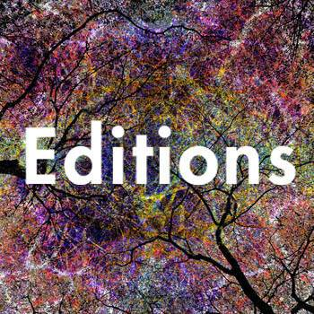 Nuwan Shilpa Editions 女娲希尔帕 | 限量版 Nuwan Shilpa Hennayake 的限量版 Visionary Art NFT 在自定义智能合约上铸造。每件艺术品限量发行 11 件我是来自斯里兰卡的迷幻有远见的艺术家，我创作了 🅳igit
NV-META-PASS NV-META-PASS NFT 在过去 7 天内售出 2 次。NV-META-PASS 的总销售额为 9.55 美元。一份 NV-META-PASS NFT 的平均价格为 4.8 美元。共有 5,995 名 NV-META-PASS 所有者，总共拥有 1 个代币。 ABC
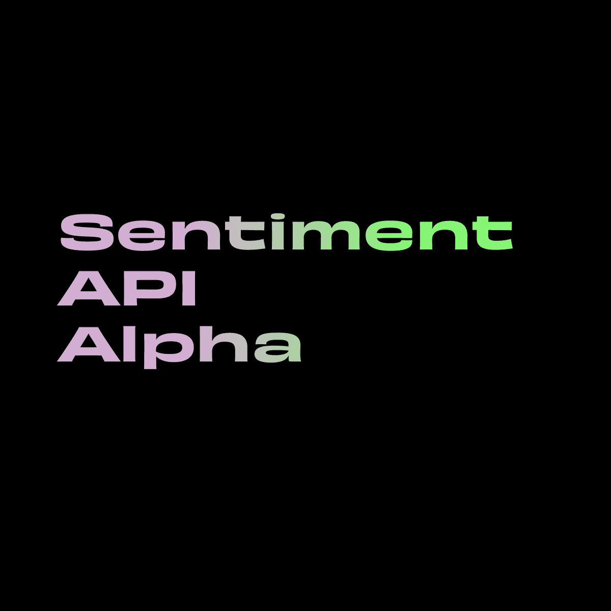 NXC Sentiment API Alpha NXC Sentiment API Alpha NFT 在过去 7 天内售出 7 次。NXC Sentiment API Alpha 的总销售额为 949.6 美元。一份 NXC Sentiment API Alpha NFT 的平均价格为 135.7 美元。共有 144 位 NXC Sentiment API Alpha 所有者，总共拥有 200 个代币。
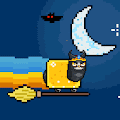 NyanBirds 5555只NyanBirds进入元宇宙风格！过去 30 天最畅销的 NyanBirds NFT NyanBirds NFT - 常见问题（FAQ） ▶ 什么是 NyanBirds？ NyanBirds 是一个 NFT（非同质代
NyanDogg Nyan Dogg 有史以来第一次高飞。这是 Nyan DO-Double-G，这是 Nyan Cat 和唯一的 Snoop Dogg 之间的官方 4/20 庆祝活动！Nyan Dogg 是 BeetsDAO 为您带来的 1 of 1 产品。没有压力
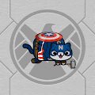 NyanFrndz NyanFrndz 是一个 NFT 集合，包含 3333 个独特的 Nyan 角色，它们生活在以太坊区块链上。 您的 NyanFrndz NFT 兼作 Nyan 社区会员资格，并仅授予会员权益。 持有其中 2 个 NFT 将使持有者有资格
nyc365 journey to the unexpected. nyc365 不仅仅是一部纽约市的纪录片，它是对这座城市的美丽、对比、砂砾、光辉和节奏的奇幻视角，充满了超现实主义、抽象主义、印象主义、立体主义和现实主
O3 Hacker Punks HackerPunks 是一组独特的 O3 NFT，以纪念世界上历史上最大的加密货币盗窃案。它们是生活在以太坊区块链上的独特数字收藏品。您的 O3 NFT 兼作 O3 交换 V2 挖掘工具。访
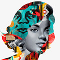 OBEY GEMMA Shepard Fairey 和 Tristan Eaton 为 GEMMA 和 DEGENERATE/REGENERATE 的 NFT 持有者开展合作。 OBEY GEMMA NFT 在过去 7 天内售出 4 次。 OBEY GEMMA 的总销售额为 266.67 美元。 一份 OBEY GEMMA NFT 的平均价格为 66.7 美元。 有 882 位 OBEY GEMMA 所有者，总
OBJECTZ BY JIMMY 铸币是活的！ OBJECTZ.XYZOBJECTZ 是 JIMMY 的 3396 张图像的集合。 每件艺术品都是一个独特的数字结构，在网络浏览器中生成。 该过程由 JavaScript 执行，并具有 JIMMY 作品的标志性元素。 什么是吉
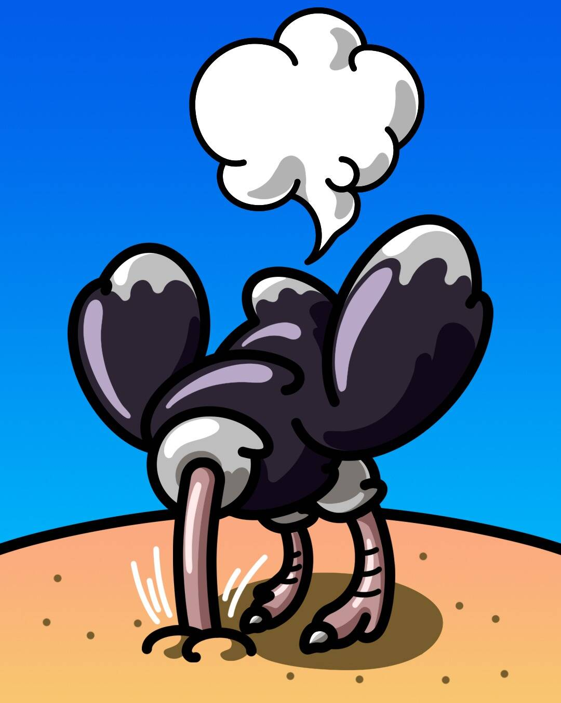 Oblivious Ostriches 这组 4,892 只鸵鸟的头颅埋在沙子里，是一种免费薄荷糖，旨在在熊市期间让 NFT 人群振作起来（他们无法忍受看加密货币图表）。 当 ETH 恢复历史最高价（4,892
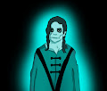 OCE Trick or Treat 每个不给糖就捣蛋的 NFT 将授予您超过 90 ETH 的赠品、10 月 31 日美国东部标准时间晚上 9 点在 Discord、电影频道、琐事赠品 (20+ ETH)、最大持有者赠品
Ocean Depth Dangers 这个集合中只有 4'000 个 NFT 图像这是来自深海深处的生物集合 另外 105 张图片将在第三天另外 110 张图片可用等…在第 25 天另外 220 张图片将可用所以，这
Ocean's 11 Frank Ocean 于 2011 年 11 月 11 日在伦敦 XOYO 表演的一系列 33 张独特电影照片，以 11 组为一组发行。这是 Ocean 自他广受好评的混音带“nostalgia, ULTRA”发行以
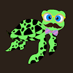 Ocean-Project-Turtles Ocean Project Turtles 是一个全新的集合，包含 10,000 个独特的 NFT，它们生活在 Polygon 区块链上 - No Gas。 每只海龟都是手绘的，由算法随机生成并 100% 归您所有。 它无法复制、带
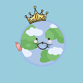 OceanStarsClub OceanStarsClub 拥有 10,000 只独特可爱的海洋动物，由 6 种海洋动物（海豹、鲨鱼、北极熊、章鱼和企鹅）组成，个个都酷毙了！ 我们有一个绝妙的游戏规则：6 种不同的动物可
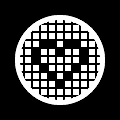 OCM Earth 注意：以 0.1 ETH 铸造并 100% 捐给慈善机构：https://onchainmonkey.com/charity/ocm-earthOCM Earth 是一个慈善 N
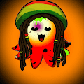 Oct0Crypt 三千只独特章鱼的集合生活在多边形网络 ERC-721A 3000x3000px 艺术品每只章鱼都有不同的 6-8 个特征它们都想去月球🚀🌕 什么是 Oct0Crypt？ Oct0Crypt 是一个 NFT（不可替代
Octave By Madison Garcia Octave 是 Madison Garcia 的 Genesis NFT 系列。 所有 Octave 都以自己的特殊方式独一无二且罕见。NFT 系列考虑了数千种形状变体、颜色范围和噪声模式。 有 87 种不同的照明和选择场景，
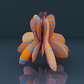 Octave By Madison Garcia Octave 是 Madison Garcia 的 Genesis NFT 系列。 所有 Octave 都以自己的特殊方式独一无二且罕见。NFT 系列考虑了数千种形状变体、颜色范围和噪声模式。 有 87 种不同的照明和选择场景，
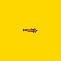 ODB Moon Loot ODB Moon Loot - 为即将在 ODB 多元宇宙中推出的 2D 游戏收集物品，其中包含来自 One Day Bastards 的可玩角色掉落。 你可以用你的混蛋互相争斗！网站：https://oned
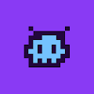 Odd Mob Evo 奇怪的暴徒已经演变成更大的东西…… Odd Mob Evo NFT 在过去 7 天内售出 3 次。 Odd Mob Evo 的总销售额为 16.25 美元。 一个 Odd Mob Evo NFT 的平均价格
OddAliens 加入我们的 DISCORD 频道 ddAliens 是一个独特的 NFT 集合，具有超过 200 个由算法生成的手绘特征，作为 ERC-721 NFT 存在于 matic 网络上。 每个外星人都有独特的属性，有些比其他的更罕见
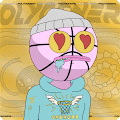 Oddball Club (Official) Oddball Club 是一个由 5,000 个独特的数字收藏品组成的集合，这些收藏品具有 200 多个特征，它们存在于以太坊区块链中。 Oddballs 是进入未来项目风险的象征，包括我们特别设计
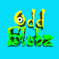 OddBlobz 经过死亡自我 OddBlobz 有各种颜色、形状和大小。来自整个银河系的可收集的好奇生物。 什么是 OddBlobz？ OddBlobz 是一个 NFT（Non-fungible to
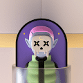 Oddies Club: Genesis Oddies Club 汇集了 2.222 种怪异可爱的古怪物品，风格独特，个性独特。 现在在 https://mint.oddiesclub.com/ 上铸币我们的愿景是拥抱多样性和年轻的理想，并通过友好和令人难以置信的社区、创造
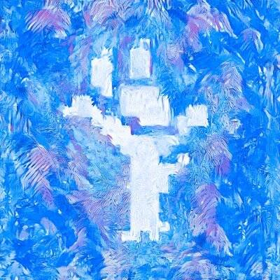 OdditiesAI 薄荷活了！！ 前 2000 个免费，每个剩余 0.005 个！令人惊叹的 5555 个 AI 奇怪集合，揭示 7 月。 科技是未来，NFT 是艺术的未来！ 路线图？ 不和谐？ FCK 那个，我们要登月
oddpets.wtf 10,000 只奇怪的宠物陪伴您的奇怪朋友们在奇怪的世界中冒险。 在过去的 7 天内，oddpets.wtf NFT 被售出 85 次。 oddpets.wtf 的总销售额为 176.31 美元。 一个oddpe
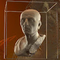 Odyssey Genesis Collection 以四个 Genesis NFT 为基石，他们建立了一个广阔而开放的市场。 这将是一个庆祝文化、发现新艺术、以他们的货币 OHM 交易和实施新想法的平台。 在 Odyssey，我
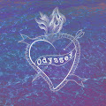 Odyssey of the Heart 迷失在海上 Odyssey of the Heart NFT 在过去 7 天内售出 1 次。 《心之奥德赛》的总销量为 109.78 美元。 一部 Odyssey of the Heart NFT 的平均价格为 109.8 美元。 有 15 名 Odyssey of the Heart 拥有者，总共拥有 17
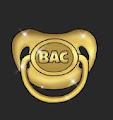 Official Baby Ape Club 时尚人士痴迷于元宇宙——Baby Ape Club 将是最具可比性的 NFT。 由于只有 1,888 只独特的 Baby Apes 供应有限，而且价格低廉，早期投资者的利润将是巨大的！ 什么是
Official Bad Santas 💰 每个 NFT 持有者都可以访问加密交易信号组！ （价值 1500 美元）💰🤯 在 2,222 个 NFT 中，其中 1 个是传奇的，这是整个系列中最稀有的作品，将赢得迈阿密之旅，拥有豪
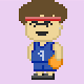 Official Blockchain Ballers Blockchain Ballers，构建一个游戏以在以太坊区块链上赢得 NFT 游戏。 2022 年免费区块链教程 - 立即开始学习 - 100% 向我们的专家学习。 如何成为区块链开发者？ - 9
Official Cool Lions 经过E15C29 第6969章 酷狮霸占元界 什么是官方酷狮？ 官方 Cool Lions 是一个 NFT（不可替代代币）集合。 存储在区块链上的数字艺术品集合。 ▶ 官方 Cool Lions
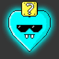 Official Crypto Hearts 2500 颗加密之心。 这里全是爱，没有路线图，50% 的版税用于心脏和心理健康基金会。 让我们一起抽出这些心！ 将为所有 Crypto Heart 持有者宣布隐藏实用程序。 什么是
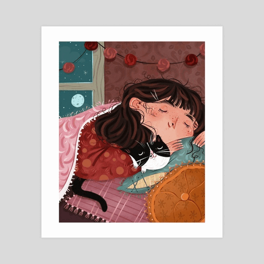 Official Fairytales Fairytales是一个项目，共有3733个代币，类似3只小猪，7个矮人，3个仙女教母，3个愿望，7个美人鱼姐妹。 这些代币由 Leon DeYun 制作，旨在
Official Farrah Fawcett NFT 由 MORE 在 Farrah Fawcett 基金会的独家许可下创建，Farrah Fawcett NFT 官方系列仅限于 1 个中的 1 个，五个编号版本，共 222 件，以及一个名为 Always Farrah 的开放版本，将于 2022 年 5 月
Official Hikari 灵魂数量：2,566 初始数量：2,9989 - 截至 22 年 8 月 12 日光灵魂可以通过我们的交互式网络体验 Gen-U 转移到“初始”中。如何认领您的初始：1.找到
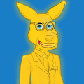 Official Kangaroo Heroes 一个基于金融知识、投资教育、小企业成功和世代财富的 NFT 项目，装在袋鼠的袋子里。 Kangaroo Heroes 是 4,444 个 Kangaroo NFT 的集合，它们是独一无二的，并且存在于以太坊区块链上
Official Kanji Odoko KanjiOdoko 是一个终生系列，围绕着受动漫启发的角色展开，每个角色都是为未来实用而单独设计和制作的。 第一个系列将包括创世纪薄荷通行证，这是未来所有空投的
Official MetaPredator 什么是官方 MetaPredator？ 官方 MetaPredator 是一个 NFT（Non-fungible token）集合。 存储在区块链上的数字艺术品集合。 ▶ 存在多少
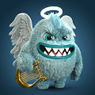 Official Monster NFT Monster Companion 是 4999 个怪物的独特集合，它们从以太坊区块链的一个神秘维度降落。它们的可爱绝对是它们如此受欢迎和可爱的原因，谁不喜欢毛球呢？ 收养怪物并不是那
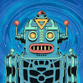 Official Retrobots 生活在 Roboverse 中的 8,888 个复古机器人的#ETH 集合。 Retrobots 接管了 Roboverse。 8,888 个复古机器人的集合已经在 Roboverse 中占据了一席之地。 该系列的灵感来自复古艺术
Official Shounen 受亚洲动画和文化启发的少年，由 YungYunky 绘制。 官方 Shounen NFT 在过去 7 天内售出 14 次。 Official Shounen 的总销售额为 146.16 美元。 一份官方 Shounen NFT 的平均价格为 10.4 美元。 官方 Shounen 拥有者 1,356 名
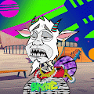 Official Skate Goats 在这里造币 (https://rb.gy/y09xew) (0.004Eth)Tre 翻转宇宙飞船，不可能像 G.O.A.T. 一样包裹月球和着陆！！ 哦等等……我们是山羊！ 好吧，我们……是你吗？！ 加入这个由 7,000 只山羊组成的 Skatopia 社区，这